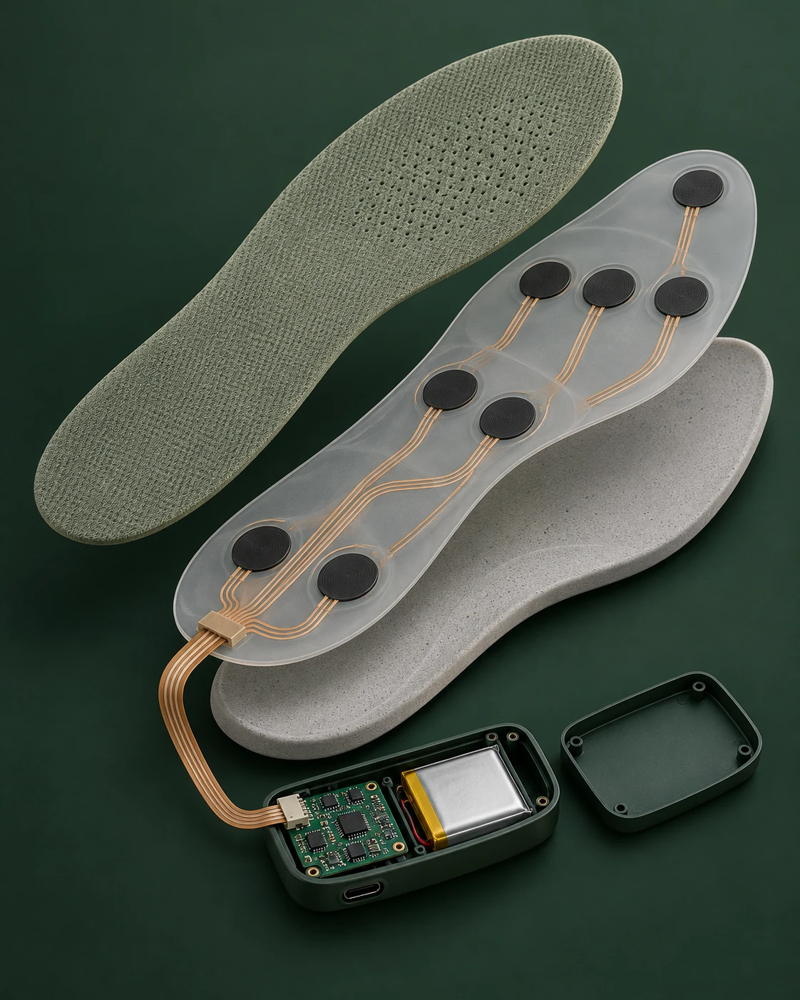

从公开原始记录出发
采用PhysioNet的两份教学样本，标明单位、点位与许可，保留原始文件校验值。
足元康 · 智能鞋健康管理平台
让脚下的信号，成为看得懂的观察。
从一段真实行走记录开始，探索受力变化与步态数据。
足底受力 · 双足同步
01 / 数据体验
回放、选段、复查、导出。
把一次数据浏览，变成有依据的理解。

V1 结构概念 · 硬件待制作实测02 / 从数据走向产品
一双能记录足底信号的智能鞋垫，一个帮助理解变化的数据平台。先把采集与分析做扎实，再逐步探索长期健康管理。
03 / 研究与验证
采用PhysioNet的两份教学样本，标明单位、点位与许可，保留原始文件校验值。
均值、峰值与积分都有明确方法。候选触地保留为待检查的估计，验证状态透明呈现。
当前用于数据体验与工程验证。自制硬件与AI模型按阶段研发，观察结果不作疾病诊断。
开始一次有依据的观察
无需注册，打开即可体验真实记录回放。